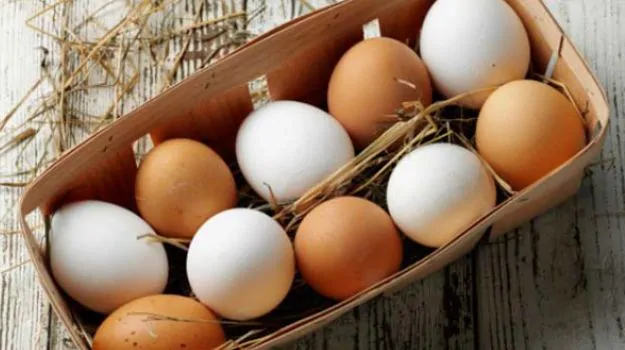
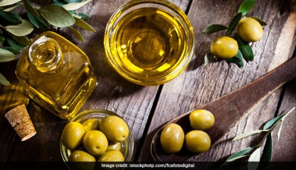
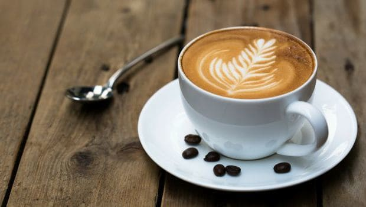
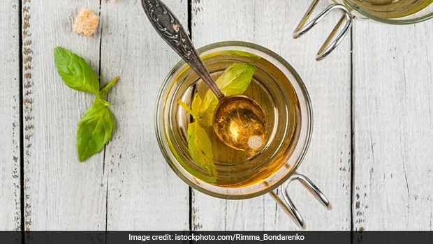

Dehydration takes a severe toll on your blood volume by decreasing it, and decreased blood volume may cause the blood pressure to drop. It is very essential to keep hydrated, especially when one is exercising. Drink plenty of water, or energising fluids like coconut water.
2. Foods High In Vitamin B-12

People who have low blood pressure, must include vitamin B-12 in their diet. Inadequate vitamin B-12 can lead to anemia, which may lower your blood pressure levels. Eggs are very high in vitamin B 12. You must include eggs in your diet in any form possible, boiled, scrambled, curried etc.
3.Olives

What is not said about the many wondrous health benefits of olives is that they are rich in vitamin E, iron and copper. But, what helps in this case is their slightly salty taste. Salty foods can increase blood pressure, especially in those who have experienced a sudden dip.
4.Licorice Tea
Drinking licorice tea may help spike up extremely low blood pressure levels. This is because licorice, or mulethi, tea may reduce the effect of aldosterone - the hormone that helps regulate the impact of salt on the body - noted a study published in the British Medical Journal.
5.Coffee

Caffeine is known to temporarily spike up blood pressure. If your blood pressure had dipped suddenly and you begin to feel dizzy, guzzle a cup of coffee or tea. It may help spike blood pressure by stimulating the cardiovascular system and boosting your heart rate.
6. Tulsi Leaves

Chewing five to six tulsi leaves every morning may help reinstate normal blood pressure levels. Consultant Nutritionist, Dr. Rupali says, tulsi leaves have high levels of potassium, magnesium and vitamin c, which can help in regulating your blood pressure. It is also loaded with an antioxidant called Eugenol, which keeps the blood pressure under control and lowers cholesterol levels.